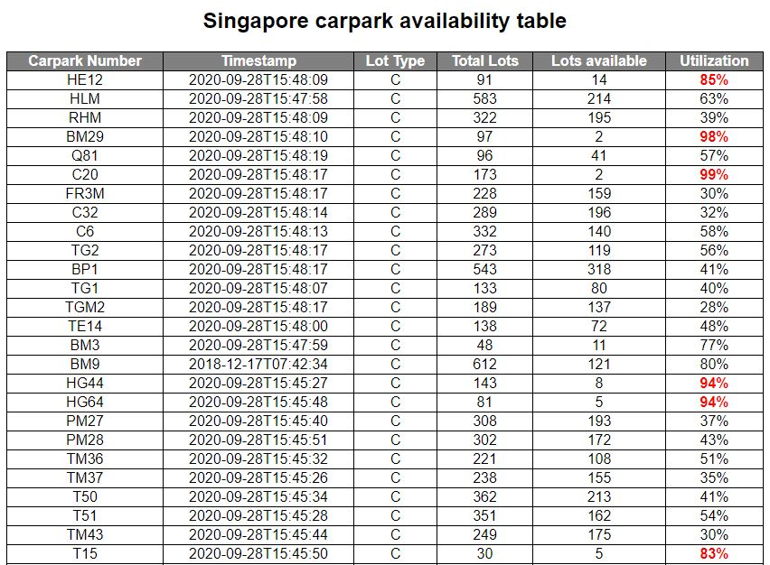

This is a quick primer into useful javascript design patterns.
These concepts will be useful because you will see them everywhere in frontend work.
Or why JQuery became popular
You could write this in plain vanilla JS:
var node = document.createElement("p");
var textnode = document.createTextNode("Test");
node.appendChild(textnode);
document.getElementById("main").appendChild(node);
OR in JQuery
$("#main").append("Test
");
Easiest is to import via script via a CDN (content delivery network)
<script src="https://ajax.googleapis.com/ajax/libs/jquery/3.5.1/jquery.min.js"></script>
Other methods: downloading and importing yourself
Install as a package, using some module bundler to manage (e.g. webpack)
JSON (Javascript Object Notation), sample code snippet:
let classroom = [
{name: "Alfred", math: 90, english: 70 },
{name: "Betty", math: 85, english: 30 },
{name: "Cindy", math: 35, english: 60 }
];
JSON — a collection of key / value pairs — has overtaken XML as a data structure for backend to communicate with frontend. You will see this everywhere.
Know how to access JSON key / value pairs.
Anonymous functions are functions without names.
It is usually not accessible after its initial creation. Often seen as arguments to other functions.
classroom.forEach(function(ele) {
console.log(ele);
});
OR you can use arrow notation (ES6):
classroom.forEach(ele => console.log(ele));
Arrow notation is a shorthand for anonymous functions. Note that the two methods are not exactly synonomous (e.g. function scope). Most use cases it does not matter though.
Different methods / design patterns of accessing HTTP resources, e.g. reading and writing (GET/POST) to a web API.
More detail: JQuery AJAX, fetch, Axios
For AJAX you can also use vanilla JS to write. Fetch is newer JS specification (ES6), and Axios is a popular promise-based HTTP client.
Simple code snippet for fetch:
fetch('https://api.data.gov.sg/v1/environment/psi')
.then(response => response.json())
.then(data => console.log(data));
Design patterns for handling the asynchronous nature of JS.
More detail: Callbacks, Promises(ES6), Async / Await (ES6)
You will mainly encounter asynchronous errors typically when you do get / post operations.
For example:
let myData = {};
fetch('https://api.data.gov.sg/v1/environment/psi')
.then(response => response.json())
.then(data => {myData = data});
console.log(myData);
What is wrong with this code?
Array functions for handling data(ES6). Or use a library like loadash for more use cases.
const words = ['spray', 'limit', 'elite', 'exuberant', 'destruction', 'present'];
console.log(words.filter(word => word.length > 6));
To be completed by 05-10-2020(Mon) 12pm
To prevent copying code, here's a screenshot of my solution:
Lots more rows below. Over 2000, in fact.
I also added quite a bit of CSS theming to make the table look nicer.
Chi-Loong | V/R